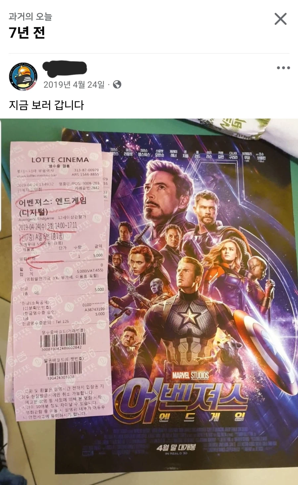

다음달에 둠스데이 개봉하는데 어떨지?

다음달에 둠스데이 개봉하는데 어떨지?
엔드게임당시:스포 당할까봐 무조건 먼저 봄
둠스데이:후기부터 보고 가야할지 고민
둠스데이인가 뭔가가 아무리 염병해도 엔드게임 발끝도 못따라갈듯,
모든 서사를 차곡차곡 쌓아놓고 마지막 한방날림 vs 세계관 개판나서 골수팬들마저 등돌리는 상황에 돌아온 배우는 단물 다 빠짐
옛날 마블영화는 못해도 평타였고 적어도 돈주고 볼만한 영화시리즈였었음
쿠키영상까지 싹싹 발라먹고나서 다음엔 어떤 빌런이나 히어로 나올라나 기대하곤 했는데
엔겜 도중에 '그 장면' 이후로 뭔가 불안하더니만
ㄹㅇ 그 이후부터 삽질 존나하더라
오히려 드라마 시리즈로 빠진것들이 수작들이여서 겨우 명맥 유지하는데
이번꺼 진짜 노잼이면 마블은 기대가 전혀 안될듯
그 장면이 뭐야?
걸벤져스
세계선 졸라 나눠놓고
심폐소생술 하는 편인데
이게 망한다?
그럼 그냥 dc 되는거야
그 반지끼고 손가락 튕기는 얘 나오는 밈이 유명해진 그건가보네